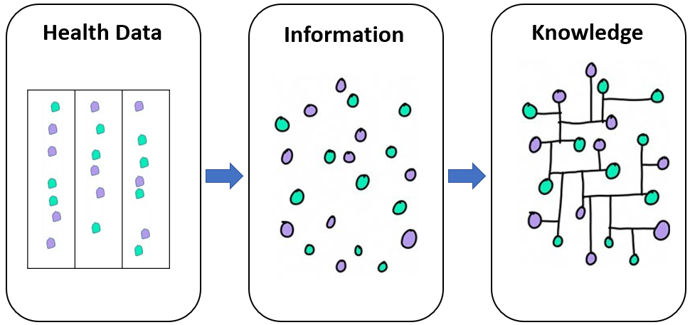

flowchart LR
A[Traditional <br/> Statistics]--- B[Descriptive statistics]
A --- C[Inferential statistics]
B --- D[Measures of frequency: <br/> e.g., frequency, percentage.]
B --- E[Measures of location <br/> and dispersion: <br/> e.g., mean, standard deviation.]
C --- H[Estimation]
C --- I[Hypothesis Testing]
style A color:#980000, stroke:#333,stroke-width:4px
12 Introduction
When we have finished this chapter, we should be able to:
12.1 Probability theory
Probability theory had its origin in gambling and games of chance. The mathematical theory of probability, as we know it today, provides a framework for quantifying uncertainty and randomness, enabling us to make well-informed predictions and decisions. In its application, probability theory utilizes mathematical concepts like events, sample spaces, and probability measures to model uncertain events. It also establishes axioms and rules governing the manipulation of probabilities (Kolmogorov’s axioms, Bayes’ rule).
Furthermore, probability theory forms the basis for statistical inference, allowing us to draw conclusions about populations based on sample data.
12.2 The discipline of statistics
Statistics is an empirical or practical method for collecting, organizing, summarizing, and presenting data, and for making inferences about the population from which the data are drawn.
The discipline of traditional (frequentist) statistics includes two main branches (Figure 12.1):
descriptive statistics that includes measures of frequency and measures of location and dispersion. It also includes a description of the general shape of the distribution of the data.
inferential statistics that aims at generalizing conclusions made on a sample to a whole population. It includes estimation and hypothesis testing.
12.3 Data and Variables
Biomedical Data
Biomedical data have unique features compared with data in other domains. The data may include administrative health data, biomarker data, biometric data (for example, from wearable technologies) and imaging, and may originate from many different sources, including Electronic Health Records (EHRs), surveillance systems, clinical registries, biobanks, the internet (e.g. social media) and patient self-reports.
Biomedical data can be transformed into information. This information can become knowledge if the researchers and clinicians understand it (Figure 12.2).

There are three main data structures: structured data, unstructured data, and semi-structured data.
Structured data is generally tabular data that is represented by columns and rows in a database.
Semi-Structured data is a form of structured data that does not obey the tabular structure, yet does have some structural properties. Emails, for example, are semi-structured by sender, recipient,subject, date, time etc. and they are also organized into folders, like Inbox, Sent, Trash, etc.
Unstructured data usually open text (such as social media posts), images, videos, etc., that have no predetermined organization or design.
In this textbook we use data organized in a structured format (spreadsheets). In statistics, tabular data refers to data that are organized in a table with rows and columns. A row is a observation (or record), which corresponds to the statistical unit of the dataset. The columns are the variables (or characteristics) of interest.
Variables
A variable is a quantity or characteristic that is free to vary, or take on different values. To gain information on variables and their associations, it is necessary to design and conduct scientific experiments.
Researchers design experiments to test if changes to one or more variables are associated with changes to another variable of interest. For example, if researchers hypothesize that a new therapy is more effective than the usual care for migraine pain, they could design an experiment to test this hypothesis; participants should randomly assigned to one of two groups: the experimental group receiving the new treatment that is being tested, and the control group receiving an conventional treatment. In this experiment, the type of treatment each participant received (i.e., new treatment vs. conventional treatment) is the independent variable (IV), while the pain relief is the dependent variable (DV) or the outcome variable.
12.4 Types of Data
Data in variables can be either categorical or numerical (otherwise known as qualitative and quantitative) in nature (Figure 12.3).
flowchart TB
A[Data in variables]---> B[Categorical data]
A[Data in variables]---> C[Numerical data]
B ---> E[Nominal<br>e.g. blood type A, B, AB, O]
B ---> F[Ordinal<br>e.g. degree of pain<br>minimal/moderate/<br>severe/unbearable]
C ---> G[Discrete<br>e.g. number of children]
C ---> H[Numerical<br>e.g. height, blood pressure]
style E color:#980000, stroke:#333,stroke-width:4px
style F color:#980000, stroke:#333,stroke-width:4px
style G color:#980000, stroke:#333,stroke-width:4px
style H color:#980000, stroke:#333,stroke-width:4px
Categorical Data
A. Nominal Data
Nominal data can be labeled creating distinct unordered categories. They are not measured but simply counted. They can be either binary such as dead/alive; cured/not cured or have more than two categories, for example, blood group A, B, AB, O; type I, type II or gestational diabetes; eye color (e.g., brown, blue, green, gray).
Numerical representation of categories are just codes
We can denote dead/alive as 1/0 for health status and denote A/B/AB/O as 1/2/3/4 for blood type. Unlike numerical data, the numbers representing different categories do not have mathematical meaning (they are just codes).
Β. Ordinal Data
When the categories can be ordered, the data are of ordinal type. For example, patients may classify their degree of pain as minimal, moderate, severe, or unbearable. In this case, there is a natural order of the values, since moderate pain is more intense than minimal and less than severe pain.
Collapsion of categories leads to a loss of information
Ordinal data are often transformed into binary data to simplify analysis, presentation and interpretation, which may result in a considerable loss of information.
Numerical Data
A. Discrete Data
Discrete data can take only a finite number of values (usually integers) in a range, for example, the number of children in a family or the number of days missed from work. Other examples are often counts per unit of time such as the number of deaths in a hospital per year, the number of visits to the general practitioner in a year, or the number of epileptic seizures a patient has per month. In dentistry, a common measure is the number of decayed, filled or missing teeth.
Discrete Vs Ordinal data
In practice discrete data are often treated in statistical analyses as if they were ordinal data. Although this may be acceptable, we do not take the most out of our data.
Β. Continuous Data
Continuous data are numbers (usually with units) that can take any value within a given range. However, in practice, they are restricted by the accuracy of the measuring instrument. Height, weight, blood pressure, cholesterol level, body temperature, body mass index (BMI) are just few examples of variables that take continuous values.
Categorization of numerical data leads to a loss of information
Continuous data are often categorized creating categorical variables. For example, the BMI, which is a continuous variable, is usually converted into an ordinal variable with four categories (underweight, normal, overweight and obese). However, dividing continuous variables into categories leads to a loss of information.